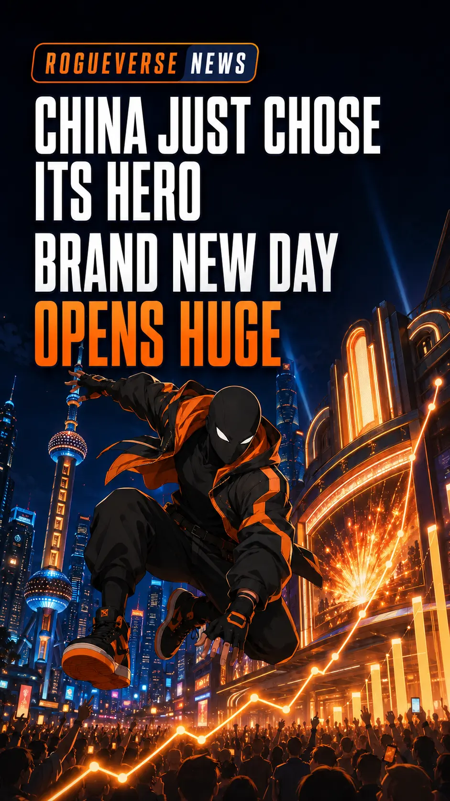

MOVIES / BOX OFFICE • JULY 30, 2026
Spider-Man: Brand New Day’s China Breakout Is Bigger Than a Record
Brand New Day delivered China’s biggest post-pandemic comic-book opening day—but the real story is what its $35 million launch says about superhero fatigue, selective audiences, and Spider-Man’s global power.

Brand New Day did not merely open well in China. It arrived like a franchise that had been waiting seven years to be let back through the door.
The latest Spider-Man film earned approximately $35 million on its Wednesday opening day in China, according to post-opening reports. That made it the country’s biggest opening day for a comic-book movie since the pandemic and one of the strongest post-COVID launches for any Hollywood release.
That is the confirmed story. The “record-breaking” headline circulating around it needs a little untangling.
The $37.4 million number was a projection
During opening day, Chinese ticketing platform Maoyan projected that Brand New Day would finish Wednesday with RMB 254 million—about $37.4 million. Later reports placed the completed opening-day total closer to $35 million, including approximately $4 million from Tuesday previews.
That distinction matters. A live projection is not the same thing as a finalized total.
At roughly $35 million, Brand New Day delivered the biggest comic-book opening day of China’s post-pandemic era. However, it appears to sit just below the approximately $35.5 million opening day of Spider-Man: Far From Home in 2019 when solo comic-book movies are compared directly.
So did it break a major record? Yes—but the cleanest description is “biggest post-pandemic comic-book opening day,” not an undisputed all-time superhero record. That is still enormous.
China had been waiting since 2019
Far From Home was the last Spider-Man solo film released theatrically in mainland China, eventually earning about $199 million in the market. Spider-Man: No Way Home never received a Chinese theatrical release, even though it earned roughly $1.92 billion worldwide without China.
That left Chinese audiences without a new solo Spider-Man movie for seven years.
The demand was visible before opening day. Advance sales reportedly reached approximately $18.6 million, while the film launched across roughly 167,000 screenings. Maoyan’s listing also showed a strong early audience response and a rapidly climbing cumulative total on July 30.
The movie’s record-setting trailer campaign had already suggested that this was not an ordinary release. Its first trailer reportedly crossed one billion views worldwide after setting a 24-hour launch record. China’s opening is the first theatrical evidence that the online attention may translate into real ticket sales.
This is not proof that every superhero movie is “back”
Hollywood should celebrate, but it should not learn the wrong lesson.
China’s box office has changed dramatically since 2019. Domestic films now command far more attention, Hollywood’s share has declined, and several superhero releases that once would have been automatic events have produced modest results. Local blockbusters such as Ne Zha 2 have shown that Chinese audiences do not need Hollywood to supply spectacle.
One massive Spider-Man launch does not reverse that shift.
What it may prove is that audiences have become more selective—not that they have abandoned superheroes completely.
Spider-Man carries advantages few characters can match: decades of recognition, multiple generations of fans, an accessible underdog identity, and a four-and-a-half-year gap since No Way Home. Brand New Day also arrived as a fresh chapter rather than another piece of connective tissue viewers had to study before buying a ticket.
The audience did not necessarily vote for “more capes.” It voted for a specific event.
The RogueVerse take
“Superhero fatigue” may be the wrong diagnosis.
Audiences appear tired of stories that feel optional, interchangeable, or designed primarily to advertise the next release. They still show up when a movie offers a character they love, a meaningful new chapter, and the feeling that opening weekend matters.
China’s response to Brand New Day suggests that the cape era is not dead. The automatic era may be.
The next test is staying power. Maoyan initially projected a Chinese lifetime total around $255 million, but that remains a forecast—not money already earned. Weekend attendance, audience word of mouth, and the film’s second-week hold will tell us whether this was a rush of pent-up demand or the beginning of a truly historic run.
People will still race to the theater for a superhero. They simply want a reason.